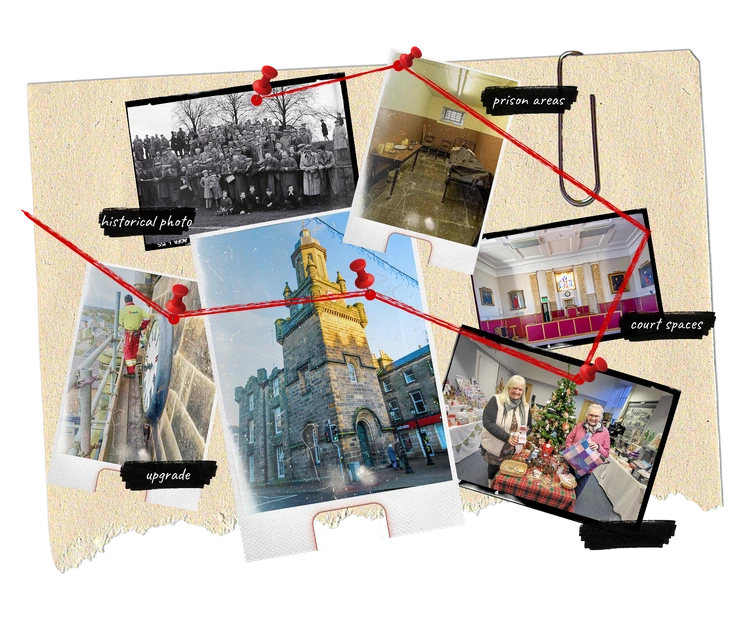
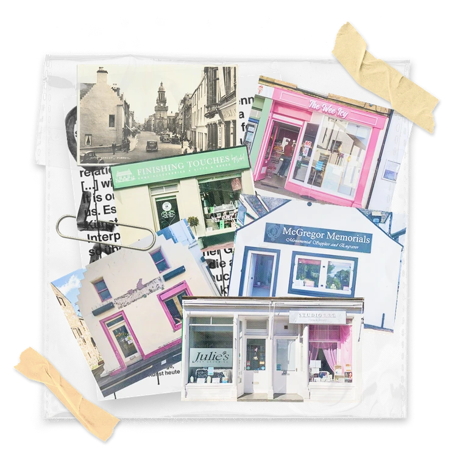
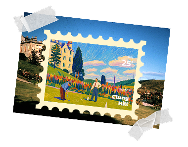

请启用 JavaScript 以阅读画册。
Future Gazette 2050 是我与 Rural Lab 合作开展的个人毕业设计。苏格兰小镇 Forres 有自己的历史与社区文化，但外来者在网上容易找到的多是景点和旅游介绍。我用 AI 查询 Forres 时也发现，回答可以流畅地描述「苏格兰小镇」，却很少说清当地居民怎样生活、一个地点对他们有什么意义。
我用同一条提示词做了两轮测试。第一轮让 AI 依据通用知识回答。第二轮提供本地证据包，包括 Sueno’s Stone 的考古资料、遗产组织的工作记录和高地运动会的社区活动材料。对比发现，加入证据后，回答能具体说明志愿者如何参与活动，也能指出石刻的哪些历史解释尚无定论。资料的范围直接影响 AI 能呈现哪些地方知识。
实地观察和访谈补充了公开档案较少记录的经验，例如新来者要重新学习环岛的骑行规则，居民则会通过社区活动讲述自己与小镇的联系。我将这些口述材料与地图、照片和历史记录编成活页画册及数字地方志，让读者能按地点查阅故事、辨认来源，也能看到同一地点的不同解释。
在 2050 年的设计情境中，访客可以在车站发现地方志，在校园图书馆阅读，居民和来访者可以向市政厅提交记忆或更正。社区核对来源后将材料收入新版。这些经核实的记录既供公众查阅，也能补充 AI 使用的本地证据包，让后来的查询包含更多具体的生活经验。